클로드 코드는 무엇이고 왜 쓰나요
발표자는 신선식품 위탁 판매를 하면서 요즘 판매에 쓰는 시간이 일주일에 네다섯 시간 정도라고 말해요. 하루가 아니라 일주일이요. 상세 페이지 만들기, 발주, 거래처 가격 비교 같은 반복 작업을 클로드가 대신 해 주기 때문이래요.
클로드 코드는 Anthropic이 만든 AI 도구예요. 발표자는 ChatGPT와 비교해서 설명해요. ChatGPT가 물으면 대답해 주는 AI라면, 클로드 코드는 내 컴퓨터를 직접 조종해서 일을 해요. 아래 장면에서 '내 컴퓨터' 창 안의 주문 엑셀과 상품 사진 폴더를 클로드가 열어 '거래처별로 나누기' 작업을 하고 있어요.
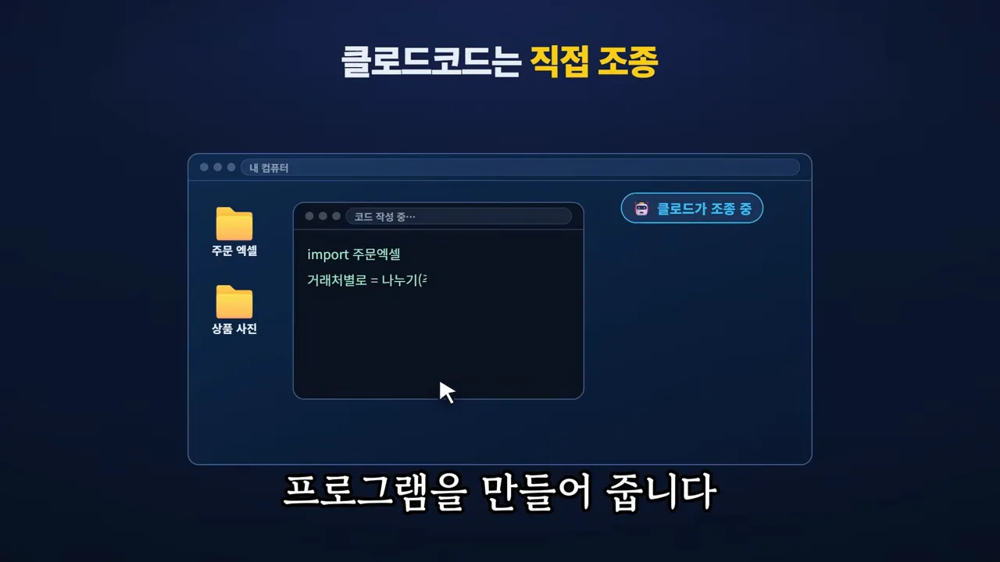
비싸지 않을까, 컴맹도 될까
비용은 상세 페이지 자동화 프로그램에 매달 내는 월 2~3만 원과 비슷한 수준이라고 해요. 같은 돈으로 클로드 코드를 구독해 프로그램을 직접 만들어 두면, 따로 프로그램 구독료를 낼 필요가 없다는 계산이에요.
컴맹도 할 수 있냐는 물음에는 자기 경험으로 답해요. 발표자도 코딩은 한 줄도 제대로 못 짠대요. 친구에게 카톡하듯 '나 이렇게 해 줘', '나 저렇게 하고 싶어'라고 한국말로만 말한다고요. 무서운 건 처음 앱을 설치하고 여는 순간뿐이고, 그 뒤로는 따로 배울 게 없다고 해요. 목표는 개발자가 되는 게 아니라는 점도 여러 번 강조해요.
세 단계로 이해하기
발표자는 클로드 코드를 계단 세 칸으로 나눠 보여 줘요. 맨 아래 '1 채팅'은 '이거 요약해 줘' 같은 질문과 대답이에요. 가운데 '2 클로드코드'는 내 컴퓨터의 파일을 정리하고 인터넷에 들어가 조사해 오는 단계예요. 맨 위 '3 스킬'은 마음에 들었던 작업을 게임 스킬처럼 저장해 두는 단계예요. 오른쪽 '내 스킬 슬롯'에 주문 정리, 상품 등록, 가격 비교 스킬이 꽂혀 있는 게 보여요.
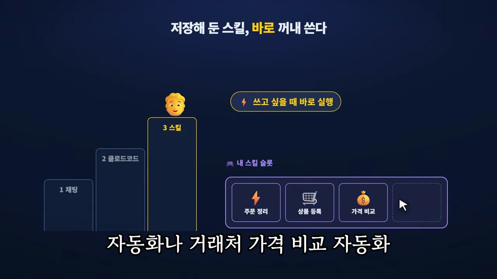
설치하고 네 가지만 켜기
설치법을 몰라도 괜찮아요. 지금 쓰고 있는 아무 AI 채팅창에 '클로드 코드 데스크톱 앱 설치법 알려 줘'라고 물으면 설치 링크와 방법을 알려 줘요. 설치가 끝나면 딱 네 가지만 켜고 시작해요.
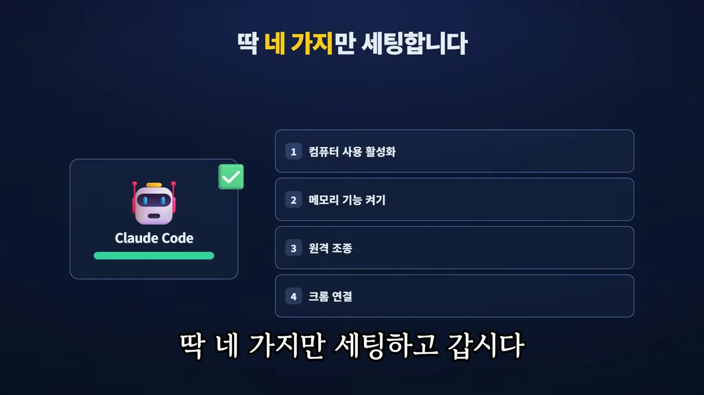
| 설정 | 어디서 켜나요 | 켜면 되는 것 |
|---|---|---|
| 컴퓨터 사용 | 왼쪽 아래 설정 → 컴퓨터 사용 | 클로드가 프로그램을 열고 클릭·타이핑해요 |
| 메모리 | 설정 → 메모리 → 채팅에서 메모리 생성 | 내 사업과 업무 맥락을 기억해요 |
| 원격 조종 | 설정 → Remote Control 항목의 스위치 세 개 | 휴대폰으로 집 컴퓨터에 일을 시켜요 |
| 크롬 연결 | 크롬 웹 스토어 → Anthropic의 클로드 확장 프로그램 | 클로드가 인터넷을 돌며 상품 등록 같은 일을 해요 |
1. 컴퓨터 사용, 2. 메모리
첫 번째 슬라이드는 클로드가 '내 컴퓨터' 창에서 주문 폴더를 열고 마우스로 클릭하는 모습을 그려요. 오른쪽 체크리스트에서 '1 컴퓨터 사용'에 체크가 들어가 있어요.
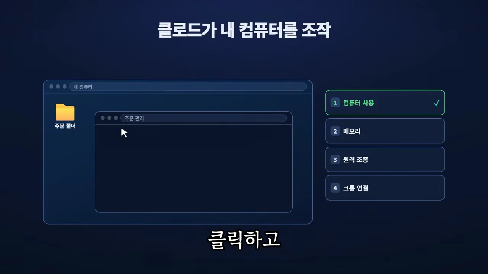
메모리 슬라이드에는 클로드가 기억하는 내용의 예가 세 줄 적혀 있어요. '쿠팡 신선식품 판매', '거래처 A·B·C 단가', '발주 엑셀 양식'이에요. 아래 '대화할 때마다 저장'이라는 표시처럼, 대화하는 동안 이런 맥락이 쌓여요. 뒤에서 나오는 '프로그램 다섯 개 추천해 줘' 공식이 바로 이 기억을 써요.
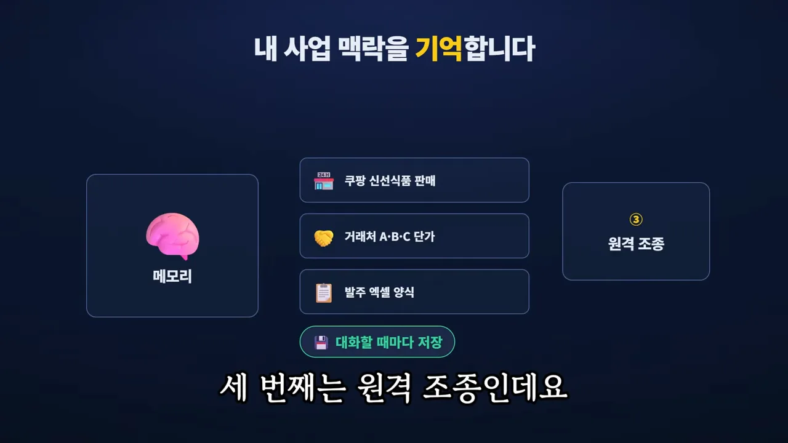
3. 원격 조종(Remote Control)
발표자가 '진짜 미쳤다'고 할 만큼 아끼는 기능이에요. 먼저 휴대폰에 클로드 앱을 깔고, 컴퓨터와 같은 계정으로 로그인해요. 그다음 컴퓨터 앱 설정에서 Remote Control 묶음을 찾아요. 실제 설정 화면에서는 왼쪽 메뉴 'Claude Code' 아래에 있고, 스위치 세 개가 모두 파랗게 켜져 있어요.
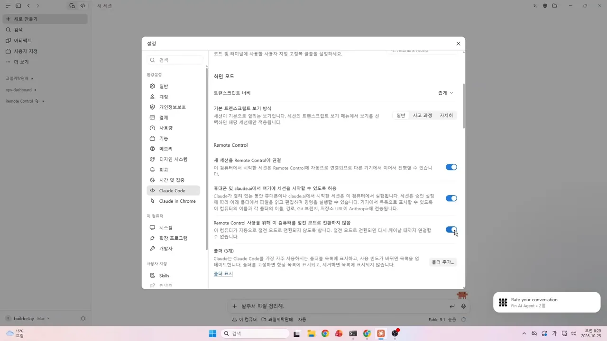
다음 슬라이드가 그 이유를 그려요. 스위치 세 개가 켜진 오른쪽에, 잠든 '내 컴퓨터'와 휴대폰 사이에 X 표시가 있어요. 아래 '휴대폰 → 코드 메뉴'는 이제 휴대폰 클로드 앱의 코드 메뉴에서 일을 보내라는 뜻이에요.
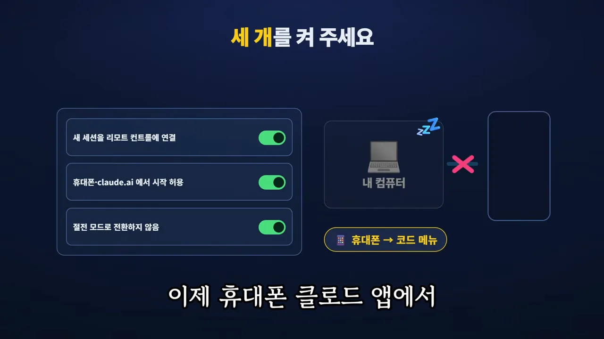
작동 조건은 두 가지예요. 컴퓨터의 클로드 코드 앱이 켜져 있어야 하고, 컴퓨터 자체도 켜져 있어야 해요. 그래서 노트북 덮개를 닫아 두면 안 된다고 짚어요.
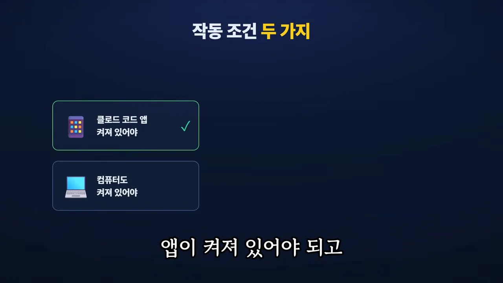
4. 크롬 연결
크롬 웹 스토어에서 '클로드'를 검색해 Anthropic이 만든 확장 프로그램을 추가해요. 주소창 옆 퍼즐 모양 아이콘을 누르고 압정 아이콘으로 고정한 뒤, 클로드 계정으로 로그인하면 끝이에요. 이제 상품 등록을 시키면 클로드가 크롬으로 판매 사이트를 돌아다니며 입력해요. 아래 장면은 상품명, 가격·옵션, 카테고리 칸이 모두 체크되며 '상품 등록 완료'가 뜨고, 오른쪽 네 설정에 모두 체크가 들어간 모습이에요.
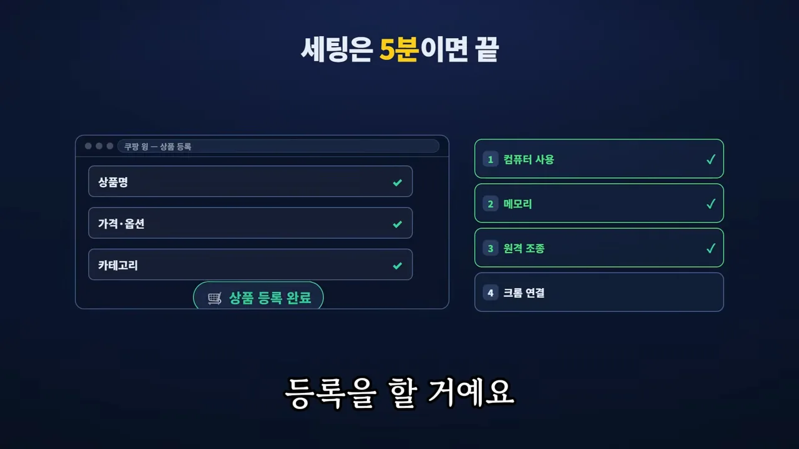
첫 실전과 지시 공식 세 가지
세팅을 마쳤다면 가장 먼저 해 볼 일은 같은 거래처 주문끼리 합치기예요. 클로드에게 이렇게 보내면 돼요.
다운로드 폴더에 있는 쿠팡 주문 엑셀 확인해서 같은 거래처 주문끼리 합쳐주고 새 엑셀로 나눠 줘
— 영상 04:29
클로드가 거래처를 어떻게 알아볼까요? 위탁 판매자는 상품을 등록할 때 등록 상품명에 거래처 이름을 붙여 두곤 해요. 슬라이드의 '감귤 5kg 대추농원', '사과 3kg 청송농장', '배 10kg 나주원예'처럼요. 클로드는 이 꼬리표를 보고 주문을 '거래처 A'처럼 묶어 줘요.
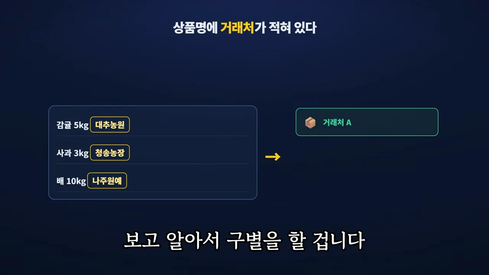
손으로 할 때와 비교해 보면 차이가 커요. 다음 장면은 거래처 양식 엑셀 A, B, C가 겹겹이 열려 있고, 오른쪽에 '복사 → 붙여넣기'가 다섯 줄 쌓여 있어요. 아래 '칼럼마다 제각각'이라는 말처럼, 거래처마다 엑셀 양식이 달라서 칸을 하나하나 맞춰 옮겨야 했던 일이에요.
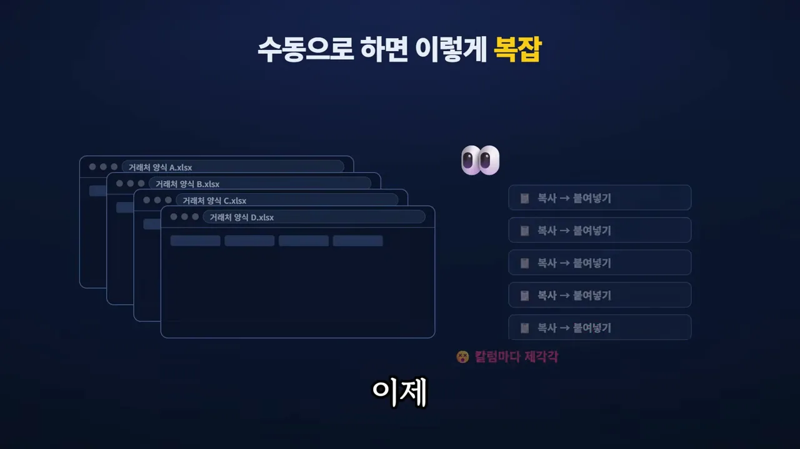
뭘 시킬지 모를 때 쓰는 공식 세 가지
AI가 똑똑한 건 알겠는데 뭘 시켜야 할지 모르겠다면, 그것도 클로드에게 물으면 된다고 해요. 발표자가 실제로 쓰는 문장 세 개를 정리하면 이래요.
| 공식 | 언제 쓰나요 | 영상 속 예 |
|---|---|---|
| ① 중학생 수준으로 번호 매겨서 차근차근 알려 줘 | 새로운 걸 배울 때 | 쿠팡 주문 연동하고 싶어. 중학생 수준으로 번호 매겨서 차근차근 알려 줘 |
| ② 너와 내가 나눈 대화를 바탕으로 내 사업에 적용하면 좋을 만한 프로그램 다섯 개 추천해 줘 | 무엇을 자동화할지 아이디어가 없을 때 | 농수산물 경매시장 실시간 단가 프로그램이 이렇게 시작됐어요 |
| ③ 매일 아침 9시에 보고해 줘 | 매일 확인해야 하는 일이 있을 때 | 거래처 단가, 상품 품절, 아이템 위너 이슈 |
첫 번째 공식은 답을 1번, 2번, 3번 순서로 받게 해 줘요. 순서대로 따라 하기만 하면 끝나요.
두 번째 공식은 발표자가 '이게 제일 좋다'고 꼽아요. 메모리에 쌓인 지난 대화를 바탕으로 후보를 내놓기 때문이에요. 슬라이드에는 추천 다섯 개가 나와요. 거래처 단가 비교 대시보드, 쿠팡 주문 거래처별 분류, 품절 상품 아침 알림, 상세페이지 자동 생성, 아이템 위너 추적이에요. 그중 3번 '품절 상품 아침 알림'이 초록 테두리로 골라져 있어요.
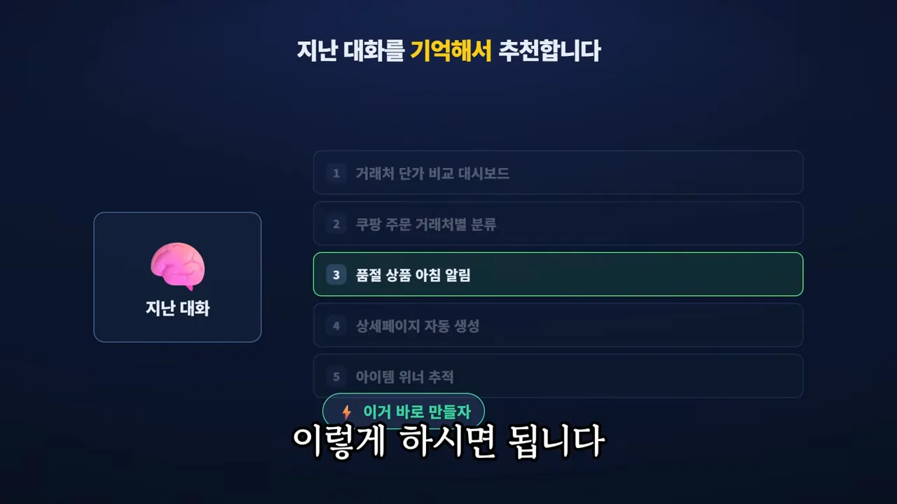
세 번째 공식은 매일 반복되는 확인 작업을 예약해 두는 거예요. 슬라이드 왼쪽 09:00 시계 아래 '매일 예약 작업' 표시가 있고, 오른쪽에 '매일 체크해야 되는 것' 세 가지가 적혀 있어요. 거래처 단가 이슈, 상품 품절 이슈, 아이템 위너 이슈예요.
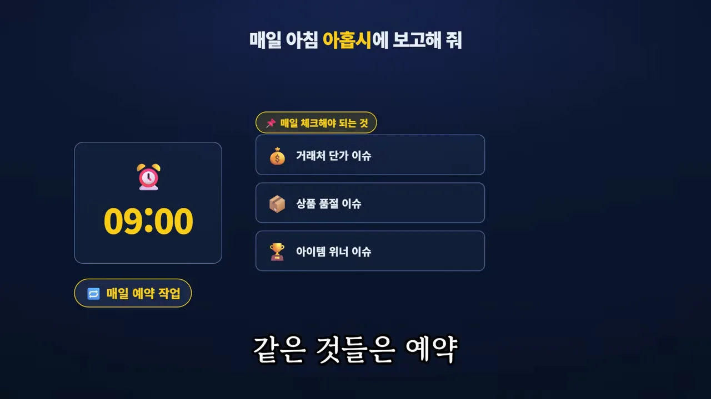
스킬, 한 번 가르치면 계속 쓰는 직원
발표자는 개념 하나만 알면 클로드 코드가 바로 직원이 된다고 해요. 그게 스킬이에요. 한 번 가르친 일을 저장해 두고, 나중에 다시 꺼내 쓰는 거예요. 아래 슬라이드 제목이 그대로 정의예요. '스킬 = 한번 가르쳐 저장해 두는 것'. 오른쪽 노란 말풍선의 '가격 바꾸고 옵션 바꾸고…'가 가르치는 대화, 그 아래 '이렇게 하면 되나요? 네!'가 확인 과정이에요.
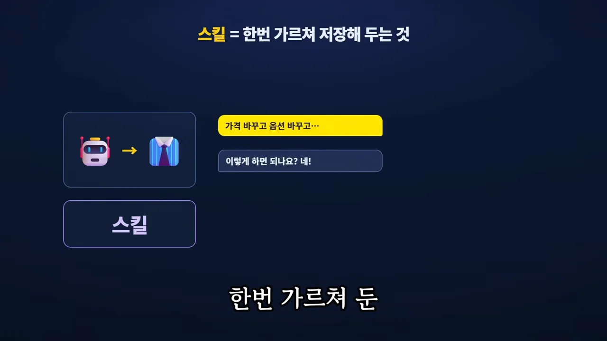
스킬을 만드는 순서
예로 드는 건 쿠팡 상품 등록이에요.
- 대화하면서 한 번 시켜 봐요 — 가격을 2만 원으로 바꾸고, 옵션을 5kg 한 가지로, 카테고리를 과일·감귤로 맞추는 식으로요.
- 결과가 마음에 들면 '방금 나랑 했던 작업 스킬로 저장해 줘'라고 해요 클로드가 스킬 초안을 만들어 보여 줘요
- 초안을 저장해요 방금 한 작업이 통째로 스킬로 남아요
- 다음부터는 한 줄로 불러요 — '감귤 5kg 2만 원 상품 등록 스킬 진행해'.
아래 장면이 마지막 단계예요. 가운데 '쿠팡 상품 등록 스킬 저장 완료' 카드 아래에, 노란 띠로 '감귤 5kg 2만 원 상품 등록 스킬 진행해'라는 한 줄 명령이 붙어 있어요.
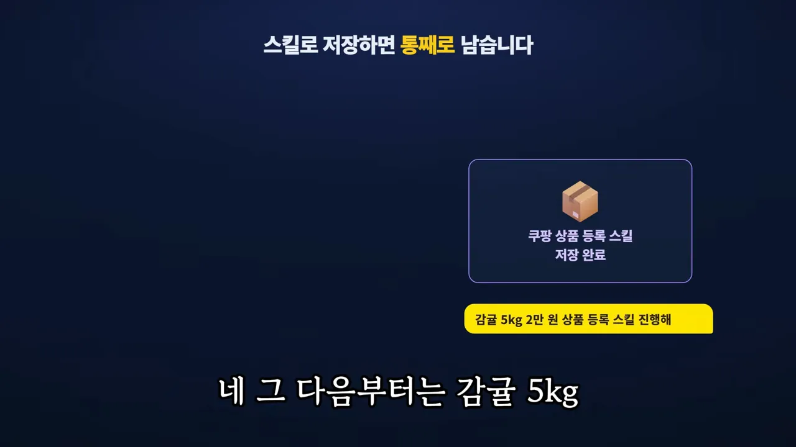
플랫폼마다, 반복 업무마다
한 걸음 더 나가면 판매 채널마다 상품 등록 스킬을 하나씩 만들 수 있어요. 슬라이드에는 쿠팡, 당근마켓, 네이버, 토스 네 카드에 각각 '상품 등록 스킬' 꼬리표가 붙어 있어요.
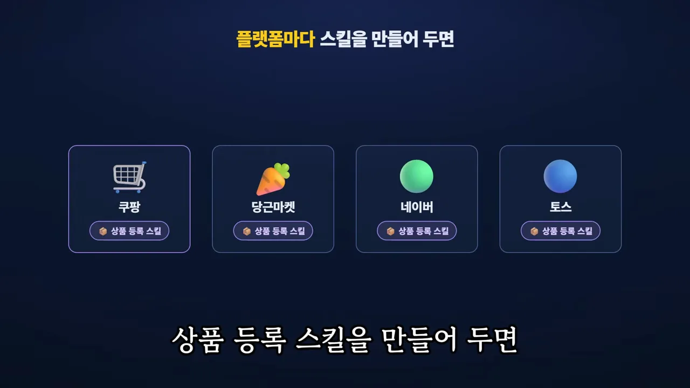
상품 등록만이 아니에요. 다음 슬라이드는 왼쪽의 반복 업무 세 가지(상품 등록, 발주, 송장 등록)가 화살표를 지나 오른쪽에서 각각 스킬이 되는 모습이에요. 오른쪽 위 '1회 가르치면 끝', 아래 '직원 뽑아서 교육하는 거랑 똑같죠'와 '땡땡 스킬 진행해'가 이 섹션의 요점이에요.
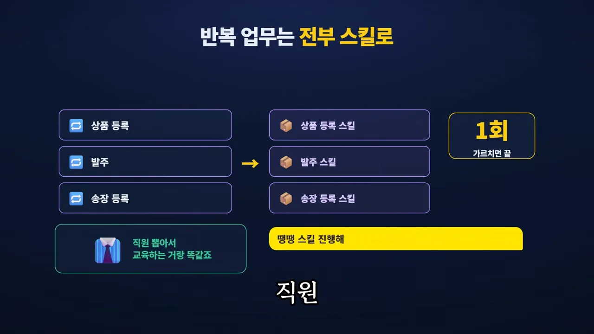
대화로 프로그램 만들기, 그리고 왜 클로드 코드인가
마지막 실습은 프로그램을 하나 만들어 보는 거예요. 먼저 정리 방식부터 권해요. 역할별로 프로젝트를 나누고, 그 안에서도 일마다 대화창을 따로 쓰라는 거예요. 발표자는 사업별·업무별로 프로젝트를 나누고, 역할마다 대화창을 따로 둔대요. 예를 들어 키워드 추천 프로그램을 만들고 싶다면 '기획팀' 프로젝트를 만들고 그 안에 '키워드 추천' 대화창을 여는 식이에요.
대화창을 열었다면 원하는 걸 짧게 설명하면 돼요. 아래 장면의 노란 칸이 발표자가 보낸 설명이에요. 맨 아래 '대시보드로 만들어 줘'처럼 결과를 어떤 모양으로 받을지까지 말해요.
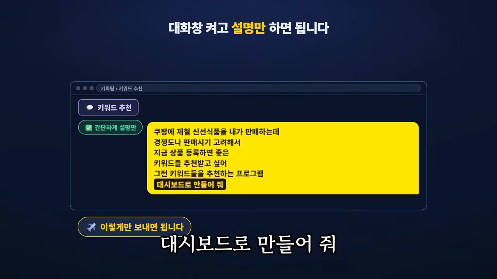
피드백으로 키워 가기
기다리면 옆에 대시보드가 뜨고 키워드가 나와요. 그중 마음에 안 드는 게 있으면 이유를 말해 줘요. 슬라이드의 노란 띠 '이거는 로켓프레시가 많아서 별로야'가 그 피드백이에요. 그러자 오른쪽에 '산지직송 감귤', '대추방울토마토' 같은 새 추천이 초록 칸으로 올라와요.
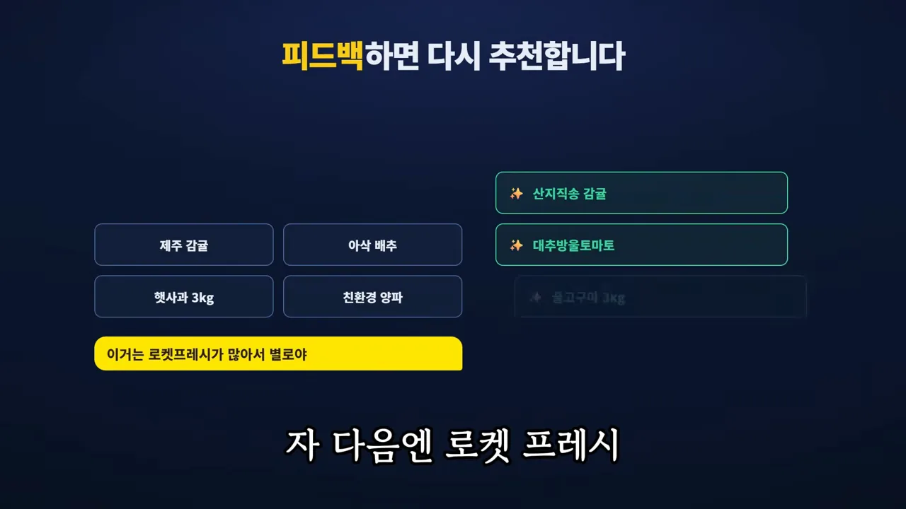
여기서 '내 거래처에 있는 상품인지 확인하고, 그중 제일 싼 거래처를 알려면 어떻게 해야 돼?'라고 또 물으면 프로그램이 한 단계 더 커져요. 다음 장면의 표에는 키워드마다 '내 거래처 보유' 칸에 초록 체크가 붙고, 감귤 5kg 줄의 '최저가 거래처' 칸에 '대추농원 18,400'이 들어가 있어요.
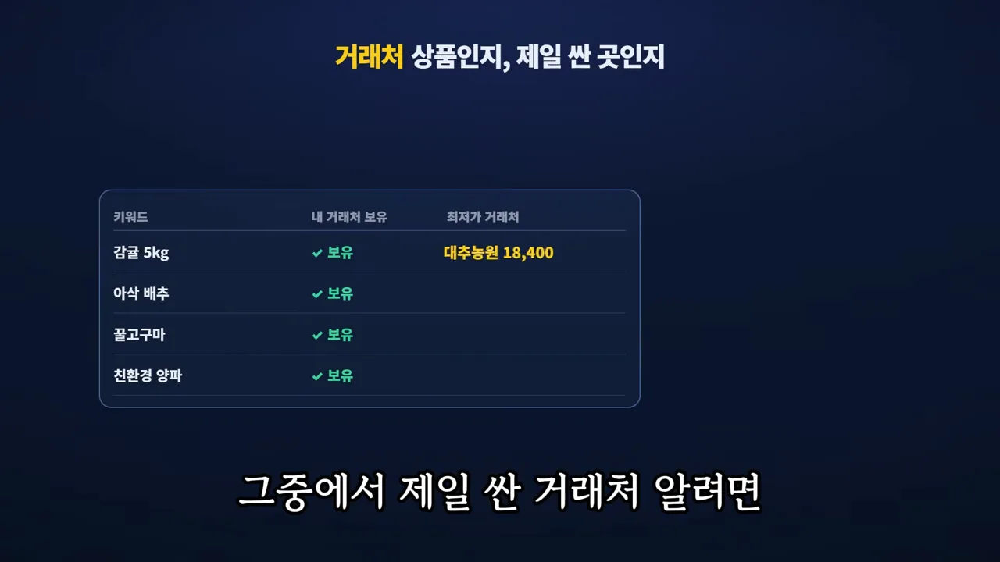
이렇게 설명하고, 결과를 보고, 피드백을 주는 흐름을 세 장면에 걸쳐 보여 줘요. 한 그림으로 모으면 이래요.
flowchart LR A["원하는 것 설명
(키워드 추천 대시보드)"] --> B["대시보드 확인"] B --> C["피드백
(로켓프레시 많아서 별로야)"] C --> D["다시 추천"] D --> E["다음 질문
(내 거래처 상품인지, 최저가는?)"] E --> B
이 흐름이 바이브 코딩이에요. 발표자는 지금부터는 상상한 거의 모든 걸 만들 수 있다고 봐도 된다고 말해요.
코덱스 말고 클로드 코드인 이유
그럼 ChatGPT의 코덱스(Codex)는 어떠냐는 질문이 나올 거라며 답을 미리 줘요. 발표자는 코덱스와 함께 요즘 좋다는 말이 많은 '아스트라'도 언급하는데, 그게 무엇인지는 설명하지 않아요. 솔직히 써 보니 클로드 코드가 좀 더 똑똑하고 일이 잘 진행되는 느낌이었대요.
슬라이드는 코덱스에 있는 기능 네 가지에 모두 체크를 달아요. 코드 작성·수정, 파일·터미널 조작, 외부 도구 연결, 작업 자동화예요. 오른쪽 'MCP 연결' 카드에는 '외부 서비스와 바로 연결'이라는 설명이 붙어 있어요.
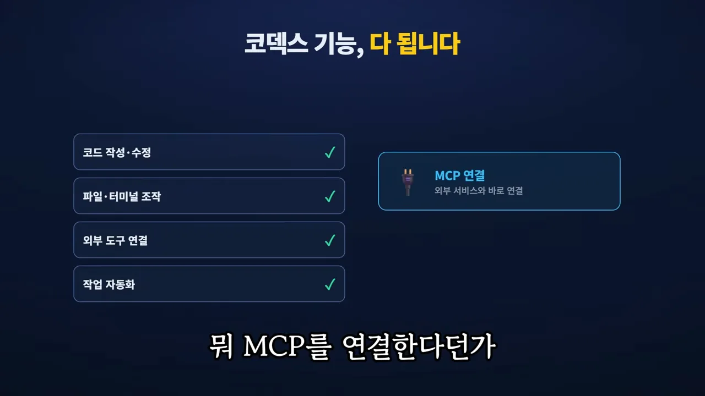
이유는 하나 더 있어요. 우리는 개발자가 될 게 아니라 쇼핑몰 사업자라는 거예요. 어느 쪽이 더 좋은지 고민하느라 시간을 쓰기보다 가장 빨리 적용하는 게 훨씬 중요하니, 그냥 클로드 코드로 정해 주겠다는 말이에요.
오늘 할 일은 하나
마무리 슬라이드는 '클로드코드 쓰세요' 카드 옆에 할 일을 순서대로 적어요. 1 클로드코드 설치, 2 기본 세팅 4가지. 왼쪽 아래 벽돌 그림에는 '늘 그렇듯 첫 시작이 어렵다'가 적혀 있어요. 영상이 말하는 세 번째 할 일은 같은 거래처끼리 주문 합치기 하나를 해 보는 거예요.
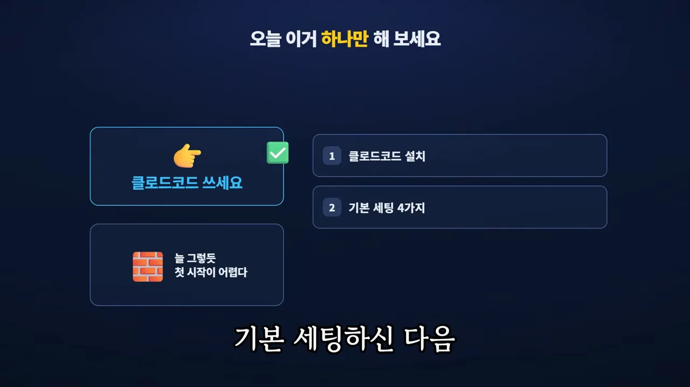
발표자는 쇼핑몰이 더는 노가다의 영역이 아니라고 정리해요. 상세 페이지, 발주, 송장 등록, 경매장 실시간 단가처럼 소싱부터 CS(Customer Service)까지 이렇게 만든 '직원'이 맡을 수 있다는 거예요.